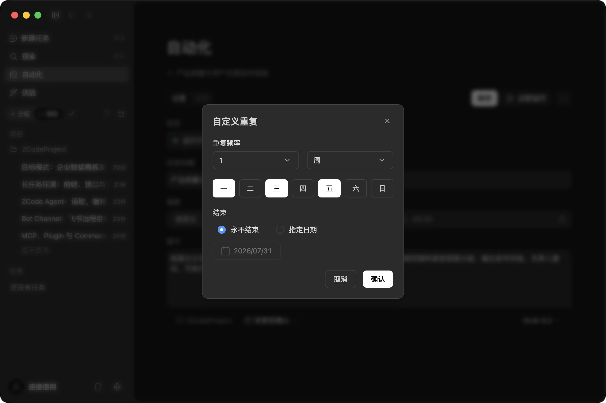
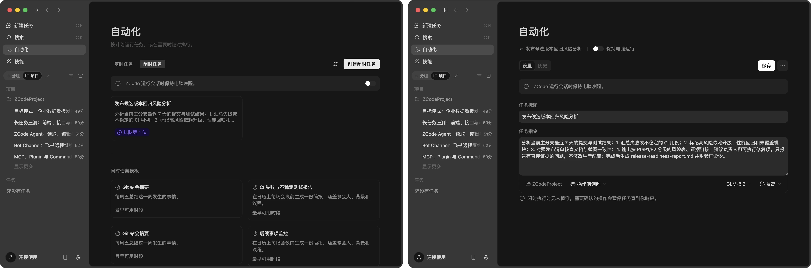
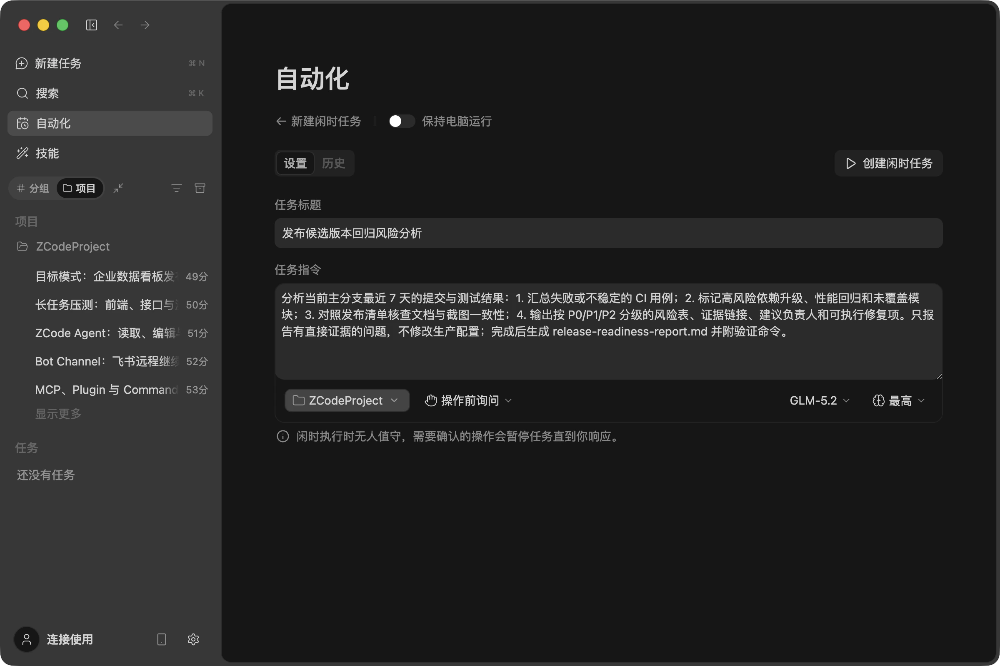
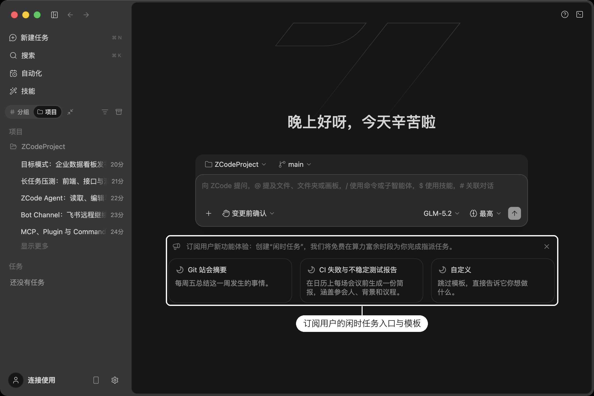
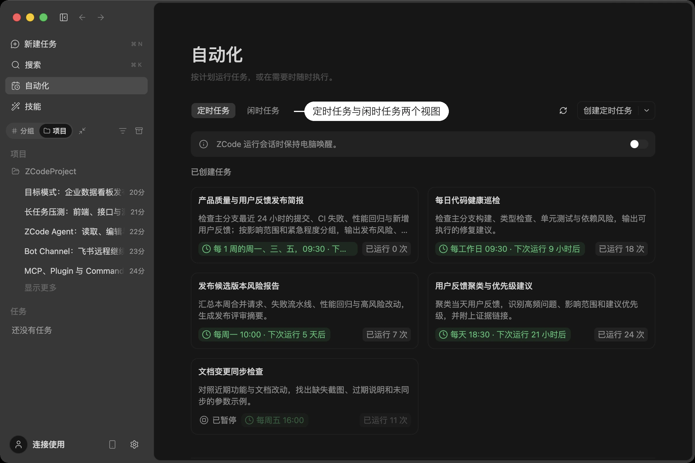
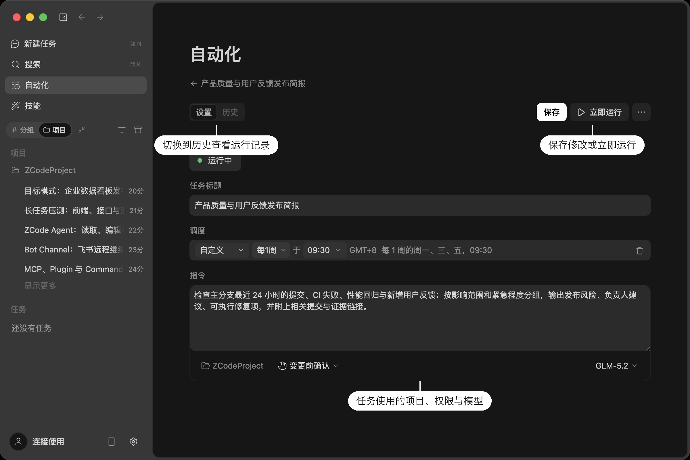
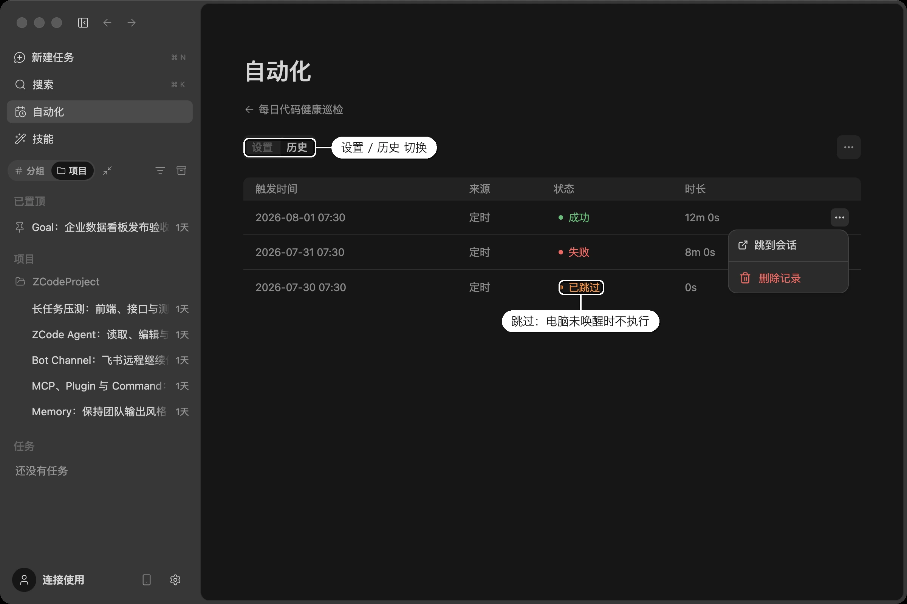
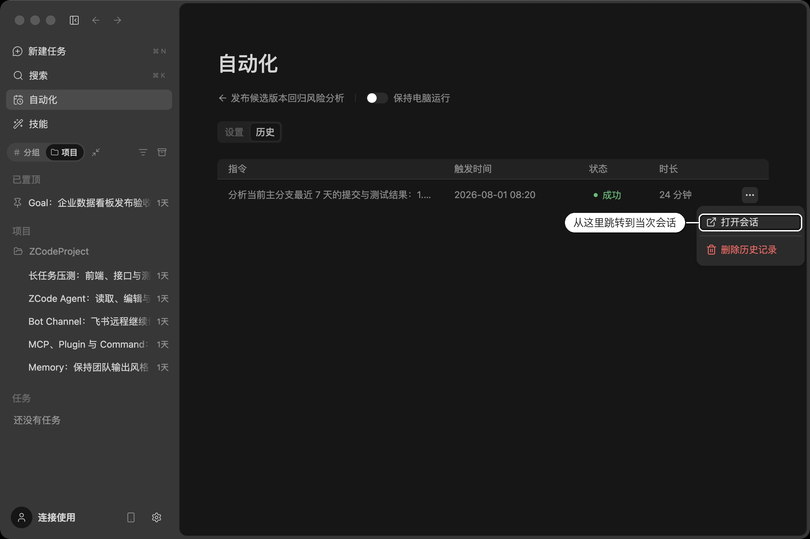

深度集成
自动化任务
有些工作不需要你每次亲自发起：每天早上汇总代码变更、每周五整理发布简报、每月检查一次依赖风险。自动化让 Drora Agent 按你设定的节奏自己跑起来，跑完把结果留在会话里等你查看。
自动化（定时任务）
自动化下面有两类任务：
- 定时任务（Scheduled tasks）：你指定时间和重复规则，到点自动执行。本节介绍。
- 闲时任务：不指定时间，排队等算力富余的低峰时段执行。见下文 闲时任务 。
在左侧边栏点击「自动化」即可打开管理页面。它属于当前项目的工作流，不在设置里——打开它不会影响左侧的会话列表，随时可以退回原来的会话。
创建定时任务
有三种方式，效果一致，选顺手的即可。
用表单创建
点击「创建定时任务」，填写四样东西：
| 字段 | 说明 |
|---|---|
| 任务标题 | 用于在列表和历史里识别这个任务 |
| 执行计划 | 什么时候跑、多久跑一次，见下文「调度规则」 |
| 指令 | 每次触发时发给 Agent 的内容，写清楚要做什么、产出什么 |
| 项目 / 权限 / 模型 / 推理强度 | 指令输入框下方的工具条，见下文「任务配置」 |
在会话里创建
点击创建按钮右侧的箭头，选择「去会话中创建」，输入框会预填一句示例，你可以直接改成自己的需求，例如：
每个工作日 9 点，汇总当前项目的代码变更和待跟进事项。用这种方式创建的任务会绑定到当前会话：后续每次触发都把结果投递回同一个会话，而不是每次新开一个。适合希望所有产出集中在一处的场景。创建成功后，会话里会出现一张任务卡片，点击「去到定时任务」可以直接跳到它的详情。
从模板创建
自动化首页提供四个现成模板，点击即可预填完整指令，改改就能用：
- 工作日晨会动态 — 汇总昨日进展与今日重点
- 每日风险扫描 — 检查代码库中的潜在问题
- 周五发布简报 — 整理本周变更，形成发布说明
- 周三文档同步检查 — 核对文档与代码是否脱节
这些模板都遵循同一套约束：只做只读分析、只使用可验证的仓库事实、证据不足时明确说明，不推测，也不修改代码。
调度规则
在执行计划里选择频率：每小时 / 每天 / 每工作日 / 每周 / 每月 / 自定义。选择「自定义」会打开重复规则对话框，可以组合出更细的节奏：
| 维度 | 可选值 |
|---|---|
| 重复单位 | 分钟、小时、天、周、月、年 |
| 间隔 | 每 N 个单位执行一次，例如「每 2 小时」「每 3 天」（1–200） |
| 具体时点 | 周几、每月几号、几月份，以及具体的时和分 |
| 按日期或按星期 | 每月重复时，可选「每月 15 号」或「每月第三个周一」 |
在会话里创建时，也可以直接让 Agent 按 5 段 cron 表达式（本地时区）安排：
*/20 * * * * # 每 20 分钟
0 * * * * # 每小时
0 9 * * 1-5 # 每个工作日 09:00确认后，调度栏会收起成一句简短摘要，点击摘要可以再次编辑。
什么时候停下来
定时任务默认无限重复。希望它自动停下来有两种方式：在自定义重复对话框里设置结束日期，到期后任务进入「已完成」；或在表单里设置最大运行次数并关闭「重复」，运行固定次数即停止。
任务配置
指令输入框下方的工具条决定这个任务以什么身份、什么能力执行：
- 项目：任务在哪个项目目录下运行。只能选当前窗口已打开的本地项目，创建后不可修改。
- 权限：和会话里一样的 四档执行模式 ，决定 Agent 能不能自己动手改文件、跑命令。选了「完全访问」时界面会一直留一个橙色提醒。
- 模型：指定执行时使用的模型，留空则跟随项目默认。
- 推理强度：控制思考深度，留空则跟随项目默认。
因为定时任务在你不盯着的时候执行，权限选择尤其值得斟酌——需要 Agent 自主改代码就放开权限，只想要一份分析报告就保持只读。
管理与运行
立即运行
任务卡片菜单里的「立即运行」会马上执行一次。它不打乱原本的计划——下次运行时间、已运行次数、启停状态都不会因此改变。
如果上一次触发还没跑完，重复点击不会排第二条，界面会提示「上一条正在运行」。
暂停、编辑与删除
任务有四种状态：运行中、已暂停、已完成、失败。暂停后任务保留但不再触发，卡片上的执行时间与运行次数会弱化显示，随时可以恢复。编辑时如果有未保存的改动，返回前会提示你确认是否丢弃。
运行历史
任务详情页顶部可以在「设置 / 历史」之间切换。历史里记录每一次触发的结果：执行中、成功、失败、停止，以及因为电脑未唤醒而跳过的那些。有对应会话的记录可以直接跳转过去，查看当时发生了什么。
需要注意的限制
- 电脑必须是唤醒状态。定时任务在你的电脑上执行，机器睡眠或应用未启动时不会触发，错过的一次性任务会记为跳过而不是补跑。如果任务安排在夜间或午休时段，请在自动化页面打开「保持电脑运行」开关——这是一个全局开关，定时任务和闲时任务共用。
- 最多 20 条。这是跨所有项目的总数，暂停、已完成、失败的任务同样占用名额，只有删除任务定义才会释放。达到上限时新建会被拦下，需要先去清理不再需要的任务。在会话里让 Agent 创建时如果撞上上限，它会直接告诉你并停下，不会自作主张删掉你已有的任务。
- 只支持本地项目。新建任务时只能选当前窗口打开的本地项目，远程工作区不在支持范围内（已有的远程任务仍可查看和管理）。手机端远程控制界面不显示自动化。
闲时任务
不是所有任务都需要马上开始。整理一份代码库分析、批量补一轮注释、跑一遍文档同步检查——这类工作晚几个小时拿到结果并不影响什么。

闲时任务就是为这种场景准备的：你提交任务后它进入全局队列，等到算力富余的低峰时段自动执行。
和定时任务的区别很清楚：定时任务由你指定时间、可以反复执行；闲时任务不排时间表、只跑一次，什么时候开始由队列决定。
使用前提
闲时任务需要登录账号并连接 Z.AI 或 BigModel 的 Coding Plan 订阅；仅以 API Key 模式接入时不支持。
如果界面提示「暂时无法确认创建资格，请刷新后重试」，说明资格校验请求还在进行中或暂时失败（例如网络波动），不代表你的账号没有资格——刷新页面或稍后再试即可。
创建闲时任务
在左侧边栏点击「自动化」，切到「闲时任务」标签，点击「创建闲时任务」。也可以在新建任务首页直接使用闲时任务模板，点击后会预填好指令带你进入创建页。表单需要填写：
| 字段 | 说明 |
|---|---|
| 任务标题 | 默认为「Untitled」，建议改成能一眼认出的名字 |
| 指令 | 任务的全部内容。因为是无人值守执行，指令要尽量完整、自足 |
| 项目 | 只能选当前窗口已打开的本地项目，创建后不可修改 |
| 权限 | 和会话一样的四档执行模式，默认「变更前确认」。执行中遇到需要确认的操作会暂停任务直到你响应；想减少失败率可以切换为完全访问 |
| 模型 / 推理强度 | 从闲时任务可用的模型列表中选择 |
指令写得越完整，无人值守时跑出来的结果越接近预期——把要分析什么、输出成什么格式、怎么验证都交代清楚，可以作为参考。
排队与执行
提交后任务进入「全局队列」，按创建时间先来先到排，任务卡片上会显示当前排到第几位。
排队期间不用干等：点开任务能核对刚才填的配置，发现写漏了直接改；列表下方的模板也一直可用，随手再排一个进去。
轮到你的任务时它自动开始执行，状态变为「执行中」。整个过程有几个特点：
- 无需你在场：任务在后台跑，你可以继续做别的事，甚至关掉这个项目的会话。
- 长任务接着跑：单次执行有时长上限，到点后任务会回到队列，下次接着原来的会话继续，不会从头再来；任务与状态都落库，应用重启也不丢。
- 不承诺具体时间：队列取决于整体算力余量，界面不会给出「预计几点开始」这类估算。任务会一直等下去，直到轮到它——如果不想再等，取消即可。
执行期间如果 Agent 遇到需要确认的操作，会像普通会话一样在会话里等你响应，任务状态保持「执行中」。
免费范围与计费边界
自动执行期间的每一次模型请求——包括工具调用循环、自动上下文压缩，以及前台派发的子智能体——都走闲时专用通道，不消耗你的套餐额度；长任务分段续跑时，每个续跑段同样如此。
你主动发的消息不免费：任务执行中或执行后，你在同一会话里补充的任何消息（包括「继续」「立即处理」这类催促），都会按你当前选择的模型正常计入套餐额度。免费只覆盖闲时队列自动派发的执行，不覆盖你自己发出的消息——这是设计行为。
插话和打断不是一回事，计费也不一样。闲时任务的会话没有锁定，执行期间你可以照常输入，但两种做法的后果不同：
- 不打断、直接输入：消息进入会话队列，等当前这一轮自动执行跑完才真正发出。这条消息以及它驱动的这一轮执行，按你当前选择的模型计入套餐额度；闲时任务本身不受影响，如果它还需要续跑，后面的自动分段照旧走闲时通道。
- 按 Esc 打断：当前这一轮自动执行被你收掉，闲时任务随之进入终态，不会再回队列自动续跑。之后你在这个会话里继续做的一切都是普通对话——这就是「自己接管」，用的是你自己的模型和额度。
权限确认不算接管：无人值守期间弹出的操作确认，你点批准或拒绝都仍在这一轮自动执行之内，继续走闲时通道，不会因为「是人点的」就变成普通计费。
执行期间，会话界面始终显示你自己配置的模型；闲时通道实际使用的执行模型由服务端统一指定，不影响你的模型设置，执行结束后一切照旧。如果你在日志里看到模型被临时切换的记录，属于正常机制。
两条与子智能体相关的限制：
- 闲时任务执行中可以正常使用前台子智能体。
-
不支持后台子智能体。Agent 尝试后台派发会收到明确报错；如果你的自定义子智能体配置了后台执行（
background: true），在闲时任务里会调用失败。
管理任务
任务有六种状态：排队中、已暂停、执行中、已完成、失败、已取消。卡片右上角的菜单随状态变化：
| 当前状态 | 可用操作 |
|---|---|
| 排队中 | 暂停、删除 |
| 已暂停 | 继续、删除 |
| 执行中 | 取消、删除 |
暂停会保留任务但停止派发。需要注意：暂停太久的任务会被放回队列重新排队，位次可能因此往后；票据已失效时，「继续」会把任务重新排到队尾。
任务失败后不会自动重试，你可以检查指令和配置后重新提交一个新任务。已经完成的文件修改在任何情况下都不会自动回滚。
在侧栏查看
已经开始执行过的闲时任务，会在左侧边栏的「闲时任务」分组里出现一行，行尾带月亮标识。点击可以进入对应会话查看 Agent 做了什么。还在排队和已暂停的任务不会出现在侧栏，它们只在自动化页面管理。
运行历史
任务详情页可以在「设置 / 历史」之间切换。因为闲时任务只跑一次，历史里最多一条记录，显示指令、触发时间、状态与耗时，支持跳转到对应会话或删除记录。
需要注意的限制
- 电脑需要保持唤醒。与定时任务一样，闲时任务在你的电脑上执行。机器睡眠期间不会推进，但也不会因此丢失——恢复后继续排队。如果希望它在夜间跑完，请打开自动化页面的「保持电脑运行」开关。
- 每天能创建的数量有上限。额度用完后创建按钮会置灰，鼠标悬停能看到多久之后恢复，到点自动放开。
- 只支持桌面端本地项目。当前版本不支持远程工作区，手机端远程控制界面也不显示自动化相关内容。
相关页面
想了解闲时任务里提到的子智能体，见 子智能体；想核对会话与套餐的消耗，见 使用统计。






